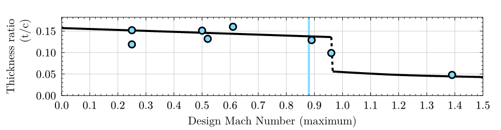

Plot Stealer
by PennDraken
A semi-fast way to get data from diagrams and plots.
1. Paste image from clipboard
2. Set xaxis and yaxis
3. Press graph to set data points
4. Copy points from text area

xmin
xmax
ymin
ymax
Select editor state:
xmin
xmax
ymin
ymax
Add points
Delete points